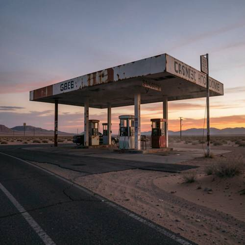
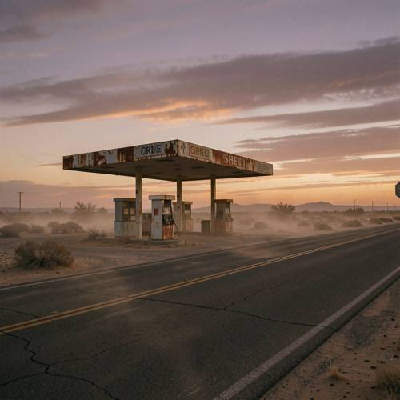
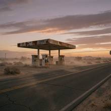
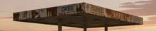

Style — At dusk, an abandoned gas station stands alone beside the desert road.
At dusk, an abandoned gas station stands alone beside the desert road. The wind and sand blowing against the rusty signs, presenting the bleak style of a road movie.

Direct — one call, no iteration

Continuum — Qwen3.8-27B + FLUX.2-klein-9B
Judge — Direct
PASSStyle — The image portrays an old, seemingly abandoned gas station in a vast desert landscape during dusk. The structure is visibly weathered with rust and peeling paint. The setting, with its cracked asphalt road, distant mountains under a twilight sky, and overall sense of desolation, effectively conveys a bleak and isolated atmosphere typical of a road movie aesthetic.
FAILAction - State — The image is a still photograph. While the environment is sandy, there is no visual indication of wind or sand actively blowing. The air appears clear, and there is no motion blur or suspended particles to suggest movement.
Judge — Continuum
PASSStyle — The image portrays an abandoned, rusty gas station in a desolate desert setting during dusk. The lighting is low and warm, casting a muted, melancholic tone over the scene. The composition, featuring the isolated structure next to an empty road stretching into the distance, evokes a sense of loneliness and decay, which aligns with the bleak aesthetic of a road movie.
PASSAction - State — There is a visible haze of dust and sand in the air, particularly noticeable near the ground, across the road, and in the background. Wisps of sand can be seen blowing across the surface of the asphalt, indicating the presence of wind.
What the agent did
Thinking
The user is asking for an image: at dusk, a run-down gas station standing alone by a desert road. Wind and sand blowing against a rusted sign, with a bleak road-movie style. Let's generate with flux2-klein (per benchmark policy). First, write a detailed prompt that fills in visual details. After that, inspect it, edit as needed, and mark the best. Let's craft the prompt: "Cinematic wide shot at dusk, an old run-down gas station standing alone beside a desert highway, a rusted gas station sign covered in peeling paint and fading lettering, sand and dust swirling in the wind across the asphalt, cracked desert road, dead vegetation, burnt orange and purple dusk sky with low clouds, dramatic cinematic lighting, bleak road-movie atmosphere, film grain, muted desaturated colors, no people, no vehicles." Avoid adding non-visual elements like names or backstory. OK. Size: default 1024x1024. Might a wide aspect ratio be better for a road-movie shot? The harness says "image size is fixed for comparison" — probably should leave it at default (1024x1024)? Hmm, "don't try to widen the frame. Image size is fixed for comparison, so expanding the canvas makes the results ungradable." So use the default size. Just call generate with the default (probably 1024x1024). Let's generate it.
Step 1 — `generate_image`
{
"model": "flux2-klein",
"prompt": "Cinematic wide shot at dusk of a run-down abandoned gas station standing alone beside a straight desert highway. Rusty faded metal gas station signs with peeling paint and faded lettering, dented canopy over empty concrete pumps, dusty cracked asphalt, tumbleweeds and dry brush, sand and dust swirling across the road in the wind, low burnt-orange and purple dusk sky with long clouds, harsh raking side light, bleak desolate road-movie atmosphere, muted desaturated color grade, subtle film grain, no people, no cars, no modern elements."
}
Result img_0

Thinking
The image is quite good. Let me check the details: the sign has faded, illegible text (the garbled "CRATE", "SPEE", "SREK")—but this is typical AI garbled text. The prompt doesn't call for legible specific text, it's just a run-down sign. Garbled faded text is actually fine for the look of an abandoned sign. The dusk atmosphere, the desert road, the sand/dust, the rusty canopy—everything is there. Critique against the prompt: - Dusk: yes, an orange/purple dusk sky. - Abandoned gas station: yes. - Beside a desert road: yes. - Wind and sand blowing: there's dust visible near the road, moderate. Could be a bit more, but it's sufficient. - Rusty sign: the canopy sign is rusty. Good. - Bleak road-movie style: yes. The garbled text on the sign isn't a problem since it's faded, but let me zoom in and check whether it's a mess. I'll use inspect_region to check the text on the sign.
Model
The first result looks promising. Let me zoom in on the sign to check the details before deciding.
Step 2 — `inspect_region`
{
"image": "img_0",
"roi": "the rusted gas station canopy sign",
"padding": 0.1
}
Result img_1

Thinking
The sign shows rust and faded, illegible lettering — which actually suits the "abandoned" aesthetic well. The text is garbled ("CRTE", "SPEE", "SRES"), but since the prompt didn't request specific legible text, it's fine for it to be faded/illegible on an abandoned sign. This is a legitimate stylistic choice — rust and worn, faded lettering. The overall image matches the prompt: dusk, an abandoned gas station by a desert road, wind-blown sand/dust, rusty sign, bleak road-movie atmosphere. Is it worth editing? The sand and wind could be made more prominent. There's already visible dust in the scene (there's a haze/dust in the right foreground). I think it's sufficient. The garbled text on the sign is acceptable as "faded, illegible" — but "CRTE" and the like look a bit cartoonish? It reads as faded, rust-covered lettering, which is fine. One consideration: the prompt says "wind and sand blowing against the rusty sign." There's dust in the scene. I could emphasize the sand a bit more, but the result is already good and matches. Following the stopping rules, "good enough is the stopping condition." The image clearly satisfies all the elements of the prompt. I'll mark this as the best. Actually, let me consider one small improvement: making the wind-blown sand more visible against the sign. But there's a risk of ruining a good result. The current dust haze is clearly visible. I'll mark img_0 as the best and stop.
Model
The details hold up: rust-streaked canopy, faded worn lettering (appropriately illegible for an abandoned station), and visible dust in the air against the dusk sky. All elements of the prompt are present — dusk light, isolated station, desert road, sand in the wind, bleak road-movie mood. This is a strong result; no further edits needed.
Step 3 — `mark_best`
{
"image": "img_0",
"reason": "Matches all prompt elements: dusk sky, abandoned gas station alone beside a cracked desert highway, rusty faded signs with worn lettering, sand and dust blowing across the road, bleak desaturated road-movie mood."
}
Thinking
Complete. Marked as img_0 (the initial generation — no edits were made afterward, so the marked image is also the latest one). I'll provide the final summary.
Model
Done. The image captures the scene as described: - **Dusk** — a burnt-orange to purple gradient sky with long, low clouds and raking side light - **Abandoned gas station** — rust-streaked canopy, faded illegible signage, empty concrete pumps, dead scrub around it - **Desert road** — a straight, cracked two-lane highway stretching to the horizon, the station standing alone beside it - **Wind and sand** — a haze of blowing dust drifting across the asphalt and around the pumps - **Bleak road-movie style** — muted, desaturated grade, cinematic composition, no people or cars I zoomed in on the rusted sign to verify the detail (peeling paint, corroded lettering) and it reads exactly like a long-neglected roadside relic. The image is marked as the best result.